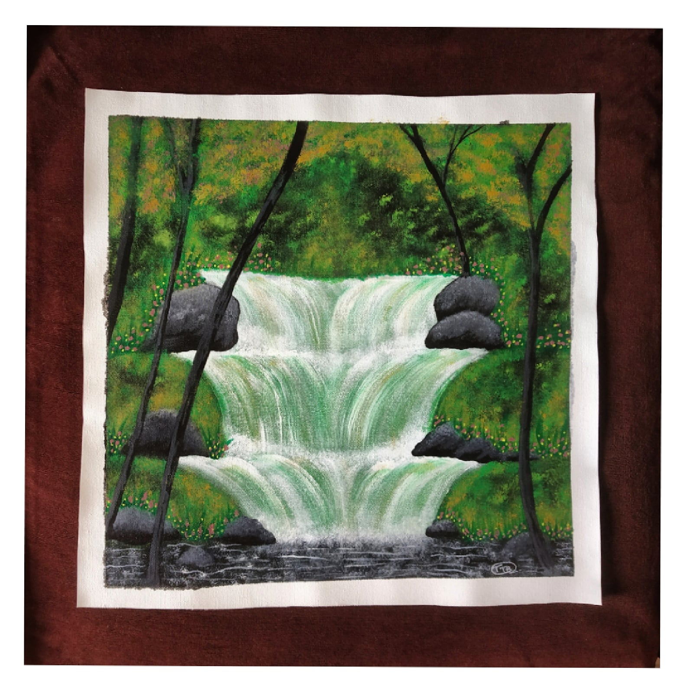

A SMALL WATERFALL
In frame is a beautiful nature painting of a small waterfall in the middle of a forest .
Waterfalls really play a very essential role in mankind as it helps in purification of water as they flow into different rivers.
this painting mainly focuses on giving a bit realistic features to waterfall and the flow of water.
Materials Required :
1 Canvas (16*16) inch.
paint brush.
black,grey,pink,orange,teal green,white acrylic colour’s.
steps one can follow(if needed) :
First take a plain canvas and tape it if you want a border or give wash to the whole canvas with teal green
leaving the little portion and let it dry.
After that with black paint the outline of waterfall and let it dry well .
After that paint the waterfall using white paint and follow the upward to downward stroke throughut the waterfall painting.
After that make the trunks and then dab light green to give the greenery effect and then let it dry well, till then paint the flow of water with little white colour.
After all this is done , take very little oranhge and pink and put small dots in few green portions to give some flower effects.
After all this let it dry before you can frame it.